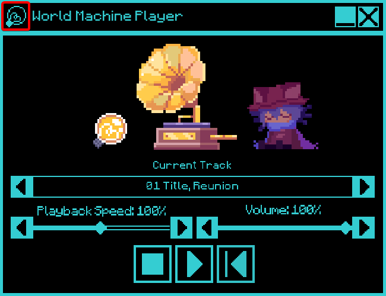
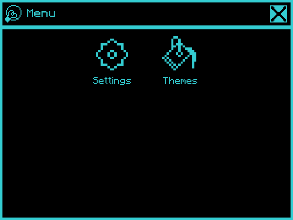
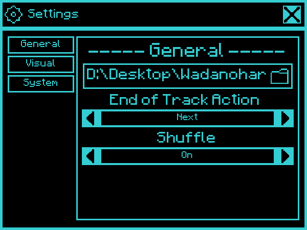
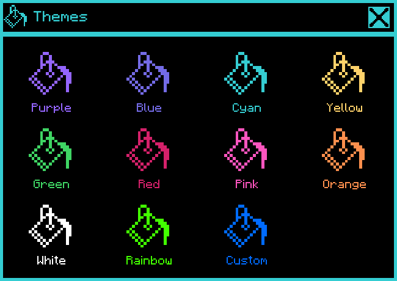
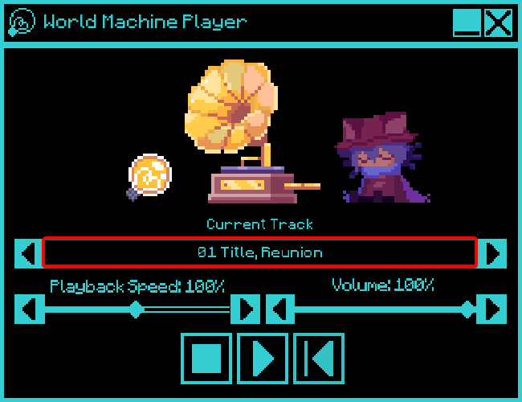
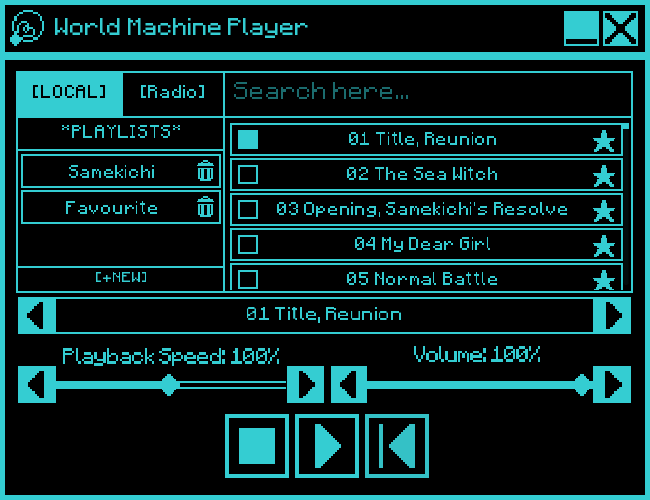

Помощь
Настройки
Руководство по настройкам плеера появится здесь.
Главное меню и настройки
- Для открытия меню нажми на иконку лампочки в правом нижнем углу.
- В открывшемся меню доступны кнопки Settings (Настройки) и Theme (Темы).
- В окне настроек можно выбрать папку с музыкой, а в окне тем — изменить внешний вид плеера.




Плейлисты
Список песен и плейлисты
- Для просмотра списка песен и плейлистов нажми на название текущего трека сверху.
- Откроется панель со всеми найденными треками и возможностью управления плейлистами.

